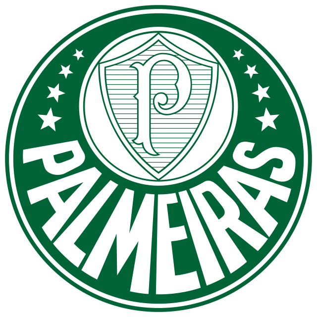
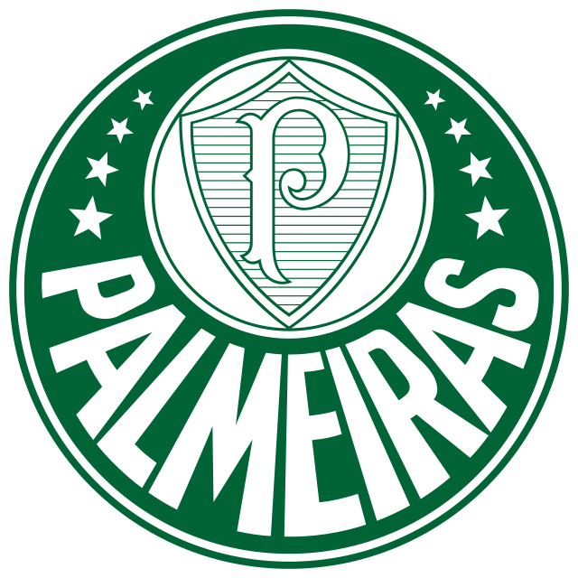

Meu nome é Emanuel, eu nasci em Campo Mourão, meu sobrenome é Menon, mas não sou parente do H-Menon, nem
parente do dono da Auto Escola Menon, estudei no Santa Cruz desde pequeno, terminei o Ensino Médio no Rondon
sou muito bom em tênis de mesa, e já pratiquei quase todos os esportes, gosto de jogar no computador e
de assistir filmes. Conheci a programação por meio de amigos que me incentivam a começar. Eu estudei
a linguagem Java no Senac e tive uma ótima experiência.
Meu desejo para o futuro é que eu me especialize cada vez mais na área, e continue aprendendo cada vez mais no meu emprego, e assim construa um futuro na área da T.I.
 
